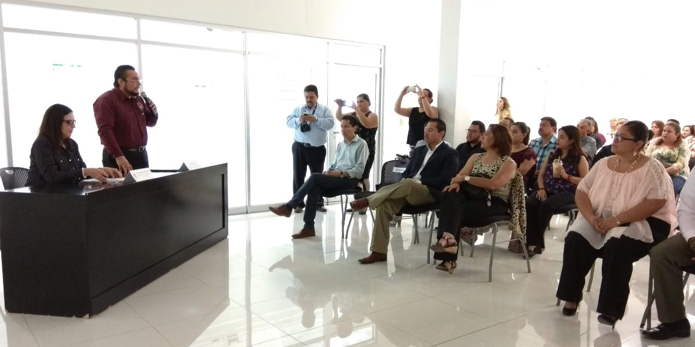
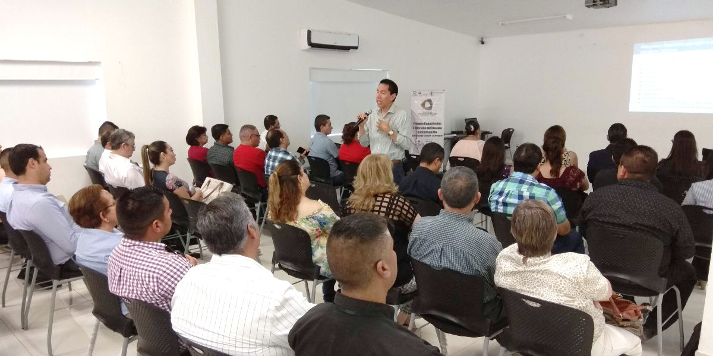
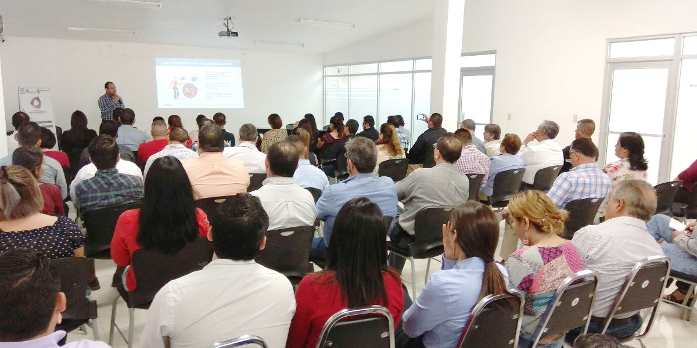

Primera Capacitación y Difusión del Sistema Anticorrupción del Estado de Coahuila de Zaragoza en la Región Norte
Piedras Negras, Coahuila a 31 de mayo de 2018

El día jueves 31 de mayo del año en curso, Servidores Públicos de la Región Norte se dieron cita en las instalaciones de la Universidad Vizcaya de las Américas Campus Piedras Negras, para participar en la Primera Capacitación y Difusión del Sistema Anticorrupción del Estado de Coahuila de Zaragoza.
Se contó con la presencia de la M. C. Marcela Castañeda Agüero, Secretaria Técnica de la Secretaría Ejecutiva del Sistema Anticorrupción del Estado de Coahuila de Zaragoza y del Lic. Humberto Sierra Luna, Subdirector de la Universidad Vizcaya de las Américas.
En su intervención, el Lic. Humberto Sierra Luna dio la bienvenida a los ponentes y participantes a la Capacitación, a quienes deseó éxito durante la jornada, y destacó la importancia y trascendencia en las acciones que el Sistema ha emprendido en su tarea de combate a la corrupción.
Por su parte, la M. C. Marcela Castañeda Agüero, agradeció el apoyo de los directivos de la Universidad Vizcaya de las Américas para llevar a cabo este evento en sus instalaciones.

Asimismo, la Secretaria Técnica abrió el ciclo de ponencias dando a conocer los antecedentes que dieron origen a la conformación del Sistema Anticorrupción, tanto a nivel Nacional como a nivel Estatal y los avances que Coahuila tiene en la materia.
Por parte del Poder Judicial del Estado de Coahuila, la M. C. Guadalupe Hernández Bonilla, Responsable de la Unidad de Derechos Humanos e Igualdad de Género, habló de las implicaciones que en materia de derechos humanos existen en el combate a la corrupción.
Del Tribunal de Justicia Administrativa, el M. C. Juan Carlos Cisneros Ruiz, abordó lo referente a las funciones que la dependencia que representa tiene en el Sistema Anticorrupción de Coahuila.

También participaron como ponentes el Lic. Luis Edgar Martínez Cruz, de la Auditoria Superior del Estado; el Lic. Gerardo Alfonso Zavala de la Peña, de la Fiscalía Especializada en Delitos por Hechos de Corrupción y el Lic. Reynaldo Rosas Cepeda, del Instituto Coahuilense de Acceso a la Información Pública.
Se contó con la presencia de Servidores Públicos de los Ayuntamientos de: Acuña, Allende, Guerrero, Jiménez, Nava, Morelos, Piedras Negras, Villa Unión y Zaragoza.
También acudieron funcionarios de la Dirección de Pensiones de Piedras Negras, del IMPLAN Piedras Negras, así como de las Coordinaciones Regionales de las Secretarías de: Cultura, Educación, Inclusión y Desarrollo Social, Infraestructura y Transporte, Medio Ambiente y Desarrollo Urbano, Salud y Secretaría de Seguridad Pública.
31 mayo 2018